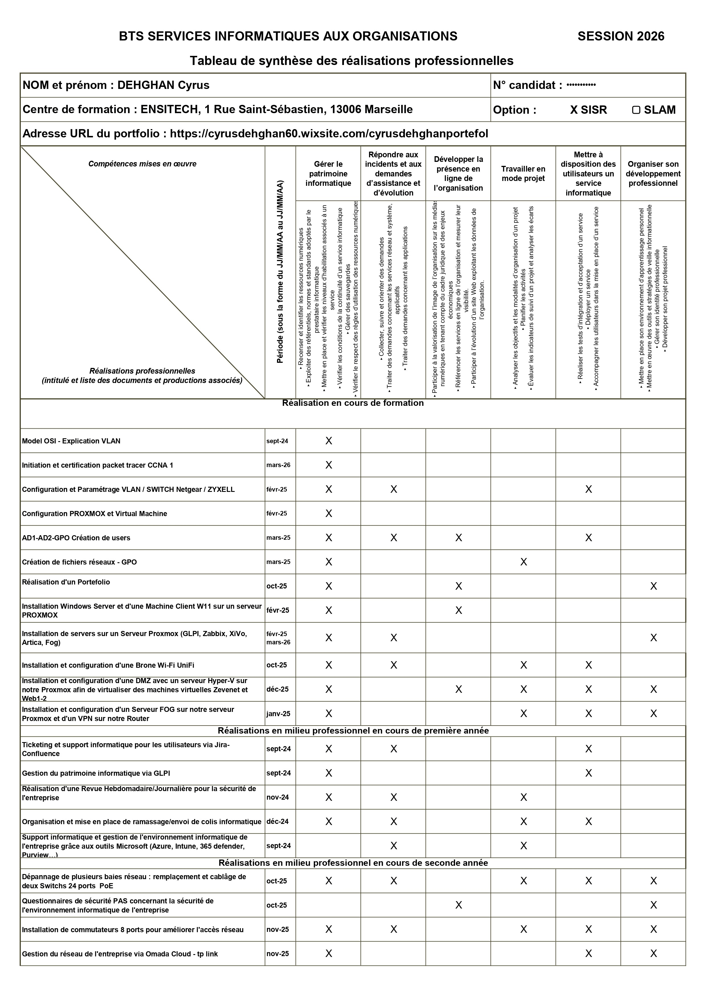
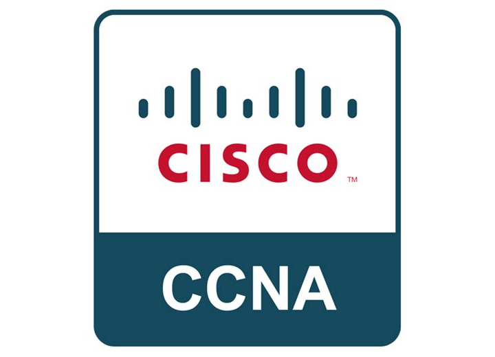

Preuves
Mes documents de référence
Les documents officiels qui attestent des compétences présentées sur cette page.

BTS SIO SISR
Tableau de synthèse (TCS)
Récapitulatif officiel des compétences mises en œuvre durant le BTS SIO SISR.
Consulter le TCS →

BTS SIO SISR
Dossiers E5 & E6
Dossiers professionnels regroupant mes réalisations en entreprise et en formation.
Voir les dossiers →

Cisco NetAcad
Certifications Cisco CCNA
Fondamentaux réseau, commutation, routage et sécurité d'entreprise.
Voir les certifications →
Progression
De l'exécution technique à la conception
Exécuter
Installer, configurer, câbler, suivre une procédure.
Administrer
Exploiter, documenter, superviser et assister les utilisateurs.
Concevoir
Définir une architecture, dimensionner, justifier les choix.
Piloter
Cadrer, planifier et coordonner un projet d'infrastructure.
Sécuriser
Analyser les risques, durcir, garantir la conformité.
BTS Acquis : BTS SIO SISR, 2024 — 2026
Bachelor En cours : Bachelor Informatique et Cybersécurité, 2026 — 2027
Domaine 01
Réseaux & infrastructure
BTS · ExécutionAcquis
- Configurer routeurs, commutateurs et VLAN
- Déployer et configurer un réseau Wi-Fi (UniFi)
- Installer, brasser et réorganiser des baies et switchs PoE en entreprise
- Lire et produire un schéma d'architecture réseau
→
Bachelor · ConceptionEn cours
- Concevoir un plan d'adressage optimisé (VLSM) et segmenter le réseau par VLAN : VTP, routage inter-VLAN (réalisé)
- Concevoir une architecture segmentée et redondante
- Dimensionner les équipements et justifier les choix techniques
- Rédiger un dossier d'architecture technique
CiscoVLANUniFiOmadaPoECCNA 1 · 2 · 3
Voir les réalisations →
Domaine 02
Systèmes, services & virtualisation
BTS · ExécutionAcquis
- Installer et administrer Active Directory, GPO et Exchange
- Déployer des systèmes d'exploitation avec FOG
- Héberger des services (XiVO) sur des serveurs virtualisés
- Gérer des environnements virtuels (Proxmox, Hyper-V)
→
Bachelor · ConceptionEn cours
- Déployer un service conteneurisé (Docker) relié à l'Active Directory : Wiki.js (réalisé)
- Concevoir une infrastructure virtualisée haute disponibilité
- Définir une stratégie de sauvegarde et de reprise d'activité
- Automatiser l'administration : comptes AD par script PowerShell, sauvegardes planifiées et chiffrées (réalisé)
Windows ServerActive DirectoryGPOExchangeProxmoxHyper-VFOGXiVODebianSambaPowerShellDockerMicrosoft Azure
Voir les réalisations →
Domaine 03
Cybersécurité
BTS · ExécutionAcquis
- Mettre en place une DMZ avec répartiteur de charge (Zevenet)
- Configurer un VPN IKEv2 sur un pare-feu Zyxel
- Filtrer le trafic web via un proxy (Artica)
- Réaliser des contrôles de conformité et de sécurité hebdomadaires en entreprise
→
Bachelor · SécurisationEn cours
- Mettre en place une veille automatisée sur les failles exploitées (CVE, catalogue CISA) (réalisé)
- Restreindre les postes d'un service par GPO : invite de commandes, Paramètres, stockage amovible (réalisé)
- Conduire une analyse de risques sur un système d'information
- Définir une politique de sécurité et une gestion des accès
- Durcir systèmes et équipements, intégrer les exigences de conformité
DMZZevenetVPN IKEv2Zyxel USG FLEXArticaLDAPSVeille CVEIIS / ASPMicrosoft 365
Voir les réalisations →
Domaine 04
Supervision, support & gestion de parc
BTS · ExécutionAcquis
- Superviser serveurs et équipements avec Zabbix et créer des déclencheurs d'alerte
- Gérer le parc informatique et les incidents (GLPI relié à l'AD en LDAPS, Jira)
- Assister les utilisateurs au quotidien en tant que technicien support
- Organiser le local technique et l'inventaire du matériel
→
Bachelor · PilotageEn cours
- Définir des indicateurs et des niveaux de service
- Piloter le maintien en conditions opérationnelles
- Structurer la gestion des incidents et des changements
ZabbixGLPIJiraAtlassianAircallBoxtal
Voir les réalisations →
Transverse
Gestion & pilotage de projet
BTS · ExécutionAcquis
- Rédiger des procédures techniques claires et reproductibles
- Préparer et réaliser des interventions planifiées en entreprise
- Communiquer avec les utilisateurs et rendre compte de mon travail
→
Bachelor · PilotageEn cours
- Rédiger une documentation technique en anglais : mise à jour du firmware Cisco 2960 (réalisé)
- Rédiger un cahier des charges et chiffrer un projet
- Planifier, coordonner et suivre un projet d'infrastructure
- Présenter et défendre des choix techniques
DocumentationPlanificationCommunication
Voir l'alternance →